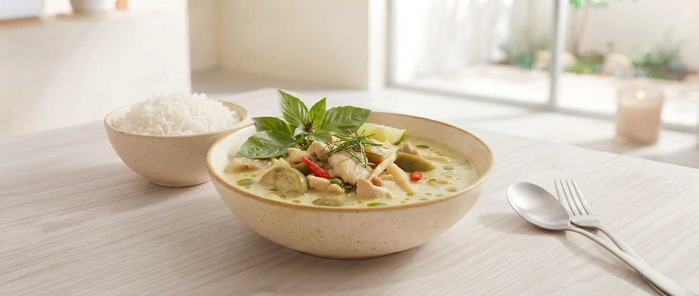
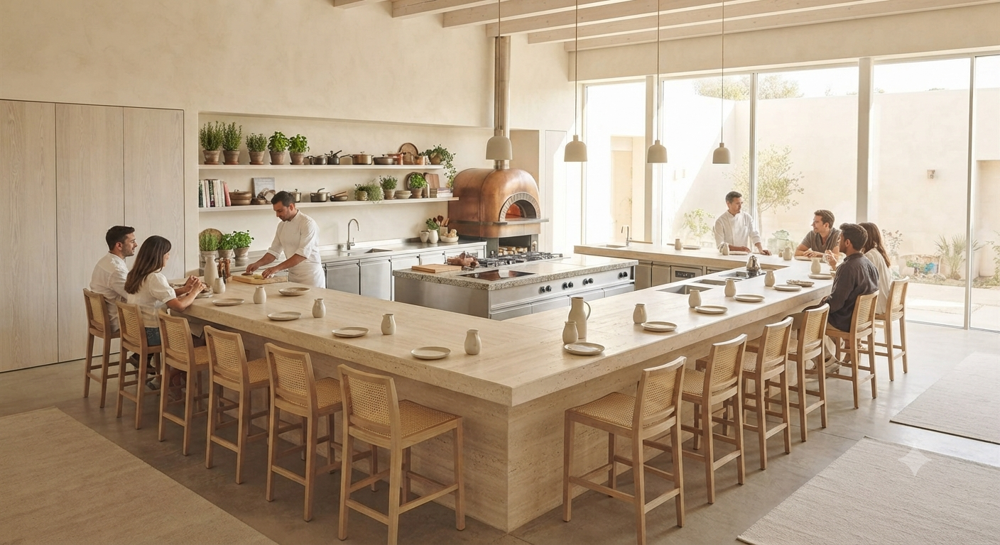

岩手・北上で、1回転のみ許された
五感を揺さぶる対話型コース料理。
【WEB予約限定】
伝説の「極みグリーンカレー」秘話動画
＆ 初回ドリンク特典
旬の食材が最も輝く瞬間、空き状況をリアルタイムで配信。
限定特典付きLINE登録
その日の食材と、お客様の好みが交差し、その日だけの物語が紡がれます。
やながわ羊、短角牛など、地元の誇りを最高鮮度でお届けします。
木曜・金曜・土曜の個室ご案内限定。食材のバックストーリーを綴った「特製ストーリーメッセージカード」の配布を準備中です。
木曜・金曜・土曜の個室確約プラン限定の、プライベートな特別サービスです。
生産者の想いや、今夜の食材が育ったテロワール（風土）の物語を手書き風にカード化。
お食事の感動と岩手の記憶をそのままお持ち帰りいただける、心に刻む演出です。
「岩手に来たら是非。素材の味が最高の形で引き出されます。」
— 50代 男性 / 観光客
「臨場感あるオープンキッチン。お腹いっぱいになる幸せな体験。」
— 40代 女性 / 地元常連様
「うなぎランチも絶品。ティクアウトのオードブルも大好評でした。」
— 30代 女性 / ファミリー
岩手県北上市本通り１丁目８−２８